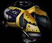
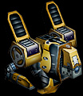
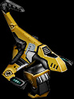
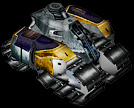
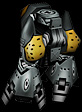
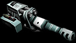
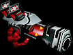
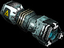
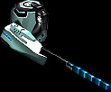

|
Equipment
The robots consist of several parts: body, chassis,
weapons and module. Body and chassis - obligatory
parts, which are available in any robot, you can add weapons and modules
at will.
Hulls
The amount of active weapon slots depends on the body type.
 |
Monostack
One slot for the main weapon.
Armor: Light. |
 |
Birex
One slot for the main weapon and one slot for the additional weapon.
Armor: Light. |
 |
Diploid
Two slots for the main type of weapon.
Armor: Medium. |
 |
Paragon
Two slots for the main type of weapon and one for the additional type of weapon.
Armor: Medium. |
 |
Trident
Three slots for the main type of weapon.
Armor: Heavy. |
 |
Fullstack
All types of weapon.
Armor: Heavy. |
Chassis
The chassis affect the speed characteristics of a robot.
 |
Pneumatics
A pneumatic action walking mechanism with legs resembling humanoid ones.
Good for any terrain except deep waters.
|
 |
Wheels
Armored wheels. Represents three pairs of wide wheels with a deep protector.
Good for any terrain except deep waters.
|
 |
Tracks
The slowest type of chassis with based on the full track action. Equipped with the additional
ultra-titan armor.
|
 |
Ecroplane
Combines the maximal off-road performance and good speed. Uses the principle
of air pumping - the so-called air cushion creation.
|
 |
Antigravs
In the area of anti-gravitation the dominators have made great progress. The chassis type developed by them
provides a robot with maximally possible speed and off-road features. |
Modules
Modules provide a robot with additional features.
|
|
Blocker
Using the granular principle of metal diffusion, covers the body cover with an additional
layer of armor, increasing its strength by 30 units.
|
|
|
Dynamo
In reality it is a giniro-oil pump. It pumps the oil in all the knots of the machine,
lubricating them and considerably increasing the heat absorption, which reduces the overheating
of weapons by 20%, increase the fire rate by 20% and the chassis speed by 20%.
|
|
|
Locator
Expands the locating abilities if a robot, and reduces the jammings. Increases the
firing distance by 20% and the radar range by 50%.
|
|
|
Firewall
Researches countermeasures and damages the electronic guidance units,
diminishing the hits by 50%. It blocks the action of a discharger, reduces
the damage delivered by Liquidator weapon by 30%.
|
Weapon
There are two types of weapons in the planetary battles:
1. Eight types of main weapons which are mounted
into the frontal weapon slots.
 |
Machine-gun
Rapid-fire weapon. Fires 20-mm projectiles. The considerable part of the modern
armor is rather effective against this weapon. |
 |
Cannon
A weapon of medium power. It shots projectiles with plasma warheads.
When hitting a target the plasma charge burns the armor through. |
 |
Missile launcher
A lucky combination of price and quality. Though it takes long time to recharge it, it pierces all sorts
of armor. Represents serious threat, when several missile launchers are combined in one
combat unit. |
 |
Flame thrower
Thermal weapon exhaust a powerful stream of flame. It has a small range of action,
but the ignited target will keep burning for a long time, till the inflammable liquid
has burned out completely. |
 |
Laser
Hits the target with a powerful heat beam burning through practically any armor, or even melting it.
Strongly overheats in action and cools off for a long time. |
 |
Plasma gun
Fires with plasma bunches at high rate. The external method of plasma creation
results in insignificant overheating. Optimal range of fire. |
 |
Discharger
Generates a direct electromagnetic impulse, rejecting the signals
of the operating system. Allows to completely immobilize the enemy. |
 |
Repairer
It is not a weapon, but rather a repairing equipment. This is a device for injection of nanorobots,
which repair the damaged parts of robots. It is usually implemented on a robot, which doesn't have
other types of weapons. |
2. Two types of secondary weapons - those mounted in the
shoulder weapon section.
 |
Mortar
Powerful weapon. Though the recharging takes long time, a sharp hit delivers large
damage. |
 |
A-bomb
A powerful means of destruction. It eliminates both a carrier and all surroundings.
It is used by quick kamikaze robots or by anyone as a last resort. |
|